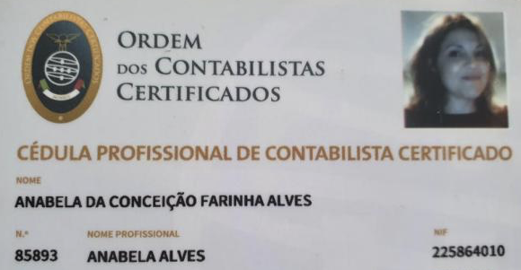

ANABÈLE ALVES
Expert-Comptable / Fiscaliste Internationale au Portugal
Je suis Franco-Portugaise, née en France dans la région parisienne, où j’ai étudié et débuté ma carrière professionnelle. À l’âge de 25 ans, j’ai quitté la France pour venir vivre au Portugal, pays natal de mes parents. J’en ai alors profité pour reprendre mes études en Comptabilité/Fiscalité en obtenant un niveau Master dans le domaine. Après avoir été reçue au Concours d’entrée de l’Ordre des Experts Comptables Portugais (Ordem dos Contabilistas Certificados - OCC www.occ.pt/pt/membros/ ) en 2008, j’ai travaillé plusieurs années pour des sociétés Portugaises.
Depuis environ 5 ans, je me suis aperçue de la nécessite grandissante de conseils fiscaux et d’accompagnement en général de Francophones venus vivre ou investir au Portugal. Forte de mon expérience professionnelle, de mes connaissances fiscales et du fait d´être parfaitement Bilingue, je me suis spécialisée dans l’accompagnement des Francophones nouveaux résidents et/ou investisseurs au Portugal.
Connue et reconnue pour mon professionnalisme, j’ai grandi dans le partage et l’aide aux francophones souvent perdus dans leurs démarches et la fiscalité au Portugal.
Suivez-moi sur ma page Facebook “Le bureau des Expatriés au Portugal” en cliquant ici
Et sur Instagram en cliquant ici
Mes Services
Comptabilité et Fiscalité
Les normes Comptables et Fiscales sont complexes et en constante évolution. Dans ces conditions, seule une veille permet de garantir la validité de son résultat fiscal. Il est donc indispensable de recourir au service d’un professionnel, pour faire les meilleures options fiscales.
Spécialisée dans plusieurs services dans ces domaines, je conseille et accompagne les particuliers, professionnels et autres investisseurs au Portugal.
RNH
Le régime Fiscal de Résident Non Habituel ou RNH, est un statut qui offre un des meilleurs régimes fiscaux pour les nouveaux résidents fiscaux au Portugal et en particulier pour les retraités et certaines professions à forte valeur ajoutée, leur permettant de bénéficier d’une exemption totale d’impôts pour certains revenus à une imposition plus favorable allant de 10% à 20 %, pour une période de 10 ans.
J’accompagne les candidats au Statut de RNH, en les conseillant et en les guidant dans les démarches afin de garantir l’obtention du statut RNH.
Auto-Entreprenariat
Choisir de travailler seul peut avoir plusieurs avantages : une
plus grande liberté, un travail varié, pour différentes
entités à la fois, etc..
De plus l’auto-entrepreneuriat au
Portugal, présente aussi plusieurs autres avantages surtout
fiscaux. Le travailleur indépendant a son propre cadre fiscal
et des règles différentes de celles des salariés. Il convient
donc de connaître ces règles et leur fonctionnement.
Je propose aux Résidents Portugais ou investisseurs au Portugal un accompagnement, dans la construction et développement de leur projet professionnel et d’investissement en général. Je propose également un service continu à l’année d’accompagnement fiscal, pour garantir et aider les professionnels dans leurs démarches administratives et fiscales.
LOCATIONS TOURISTIQUES/ ALOJAMENTO LOCAL
L’activité de locations Touristiques telles que celles qui utilisent les plates-formes de locations Airbnb, booking et autres, est considérée au Portugal comme une activité professionnelle pouvant être exercée dans le cadre d’une activité auto-entrepreneuriat, présentant, ainsi, beaucoup d’avantages fiscaux mais aussi plusieurs obligations fiscales et autres.
Étant spécialisée dans ce domaine, je propose mes services d’informations et d’accompagnement aux professionnels.
ACCOMPAGNEMENT DES EXPATRIÉS FRANCOPHONES
L’expatriation en général, peut présenter plusieurs inconvénients en ce qui concerne l’intégration des nouveaux résidents fiscaux. Pour faciliter l’intégration au Portugal, éviter les possibles désagréments liés au changement de Pays et de Cultures, aux barrières de la langue et ainsi, permettre aux expatriés de mieux vivre leur expatriation, je propose aux expatriés au Portugal un service d’accompagnement annuel.
Le Service d’accompagnement aux expatriés au Portugal, consiste à un accompagnement principalement en ce qui concerne les communications/démarches auprès de l'administration fiscale, démarches liées à différentes situations au niveau social, professionnel et personnel en général, en permettant au bénéficiaire d’avoir un interlocuteur pour toutes ses démarches quelles qu'elles soient sur le territoire Portugais.
RÉSEAUX DE PROFESSIONNELS QUALIFIÉS DANS PLUSIEURS SECTEURS
Consciente que les nécessités des expatriés ne se limitent pas à des situations fiscales, j’ai créé un réseau de Professionnels Francophones compétents, dans des domaines divers, tels que Avocats, agents Immobiliers, gestionnaires de locations immobilières etc... qui vous apporteront une complémentarité en termes de compétence, d'expertise et de fiabilité professionnelle. Je travaille aussi, avec d’autres professionnels que je peux vous recommander selon vos besoins.
TOUTES LES DÉMARCHES FISCALES EN GÉNÉRAL
Étant inscrite à “L’ORDRE DOS CONTABILISTAS CERTIFICADOS”, équivalent de l’Ordre des Experts-Comptables Française, je suis habilitée et certifiée pour effectuer les démarches fiscales des contribuables au Portugal ainsi que les accompagner et les conseiller tout au long de l’année. Je propose, donc, un large éventail de services comptables et fiscaux, comme par exemple les déclarations fiscales liées aux déclarations de revenus (IRS).
8 Raisons d'investir au Portugal...
8 Raisons d'investir au Portugal...
SITUATION GÉOGRAPHIQUE PRIVILÉGIÉE
Situé à 2 heures environ d’avion de Paris, Bruxelles et Genève, le Portugal est proche de toutes les principales destinations européennes en général. Considéré comme “la Porte de l’Europe” sur les continents Américain et Africain, le Portugal est le pays le plus à l’ouest de l’Europe, ayant son archipel des Açores à mi-chemin entre l’Europe et le continent Américain, l’archipel de Madère à l’Ouest du continent Africain et le pays le plus proche des EUA du Canada et des pays d’Amériques du Sud, Lisbonne étant ainsi la capitale européenne la plus proche des États-Unis, de l’Amérique latine et de plusieurs pays d’Afrique.
DE NOMBREUX AVANTAGES FISCAUX
POUR LES PROFESSIONNELS ET
PARTICULIERS
L'intérêt de l'expatriation au Portugal ne se résume pas au RNH, il existe d’autres avantages fiscaux qu’il ne faut pas négliger, tels que: pas de taxes sur les droits de succession et pas plus d' ISF, L’impôt Foncier est très bas, Le statut d’auto-entrepreneur présente aussi plusieurs avantages fiscaux et le régime Visa Gold, permet aux personnes résidant hors de l’UE de pouvoir investir et/ou vivre au Portugal.
LE NIVEAU DE VIE MOINS ÉLEVÉ
Tout le monde s’accorde à dire que le coût de vie est un des atouts de la vie au Portugal.
Or c’est vrai, le coût de la vie au Portugal est moindre que la plupart des autres pays Européens et c’est souvent l’une des raisons évoquées pour partir vivre au Portugal après les avantages fiscaux et le climat.
QUALITÉ DE VIE / SÉCURITÉ
Le Portugal a été considéré pour plusieurs raisons comme l’un des pays les plus accueillants et sécurisés du mondel’un des pays les plus accueillants et sécurisés du monde où ses habitants vivent en harmonie avec une ouverture unique pour connaître d’autres cultures étrangères.
Sécurité, faible coût de vie et un climat agréable ne sont que quelques facteurs qui contribuent à une qualité de vie élevée. La liberté, les droits de l’homme, une démocratie stable, un bon système éducatif développé et moderne font aussi du Portugal l’un des meilleurs endroits pour habiter car le Portugal offre une qualité de vie exceptionnelle.
PAYS À LA POINTE DE L'INNOVATION
Contrairement aux idées reçues le Portugal est un Pays à la
pointe de la modernité et tourné vers l’avenir :
En ce qui
concerne les :
- Infrastructures,
Le Portugal occupe la 13ème position (parmi 137 pays) en
termes de “Quality of overall infrastructure”
(“Qualité de l’infrastructure globale”), selon le Global
Competitiveness Report 2017-2018 / World Economic Forum (WEF).
- Télécommunications : le pays dispose d’un réseau d’infrastructures de télécommunications technologiquement avancé. Le réseau de fibre optique de dernière génération couvre la majeure partie du territoire. La proportion de connexions de fibre optique en haut débit est plus élevée que la moyenne de l’OCDE (21,2%), plaçant le Portugal à la 9e place des pays de l’OCDE et à la 5e place au sein de l’UE.
- Infrastructures routières : Le Portugal possède actuellement un réseau bien développé, composé d’Autoroutes (AE), d’Itinéraires Principaux (IP), d’Itinéraires Complémentaires (IC), de Routes Nationales (EN) et de Routes Régionales. Le réseau routier portugais a atteint sur le continent 14.310 km, parmi lesquels 2.988 km d’autoroutes, soit plus de 1/5 du total du réseau routier.
- Réseau ferroviaire : Il a une étendue d’environ 2 544 km et assure la liaison Nord-Sud au long de l’axe littoral du continent portugais ainsi que les liaisons transversales.
- Réseaux Aéroportés : Sur le continent, on trouve les aéroports de Lisbonne, de Porto et de Faro, tous internationaux et situés dans la zone littorale du pays. L’insularité des régions autonomes explique la présence d’un plus grand nombre d’aéroports. En effet, dans la Région Autonome des Açores il y a neuf aéroports et dans la Région Autonome de Madère il y en a deux.
- Liaisons maritimes : Sur le continent portugais, il y a neuf ports principaux: Viana do Castelo et Leixões, au Nord ; Aveiro et Figueira da Foz, au centre ; Lisbonne et Setúbal, dans la région de Lisbonne ; Sines, en Alentejo ; Faro et Portimão, en Algarve. La Région Autonome des Açores compte huit ports et la Région Autonome de Madère en compte trois.
- Exemple mondial en matière énergie verte, le Portugal est autonome pour son besoin en Électricité.
- les Services ATM avancés
- Pionnier dans plusieurs secteurs Technologiques, ex: inventeur du système Viaverde ( péages automatiques)
Performant en Technologie d’informations et Communication et en Technologie Internet, La Web Summit, l'un des événements mondiaux les plus importants pour la technologie, l'entrepreneuriat et l'innovation, a choisi le Portugal et se déroulera à Lisbonne au moins pendant 10ans.
- Agence Spatiale Portugaise : Portugal Space,
joue un rôle clé dans la promotion internationale du Portugal et
le renforcement de la position nationale sur les marchés
mondiaux.
Portugal Space a assumé les fonctions de la
Fundação para a Ciência e Tecnologia dans la représentation du
Portugal auprès de l'Agence spatiale européenne (ESA), de
l'Observatoire européen austral (ESO) et de tous les programmes
spatiaux de l'Union européenne (UE).
DÉMARCHES SIMPLES ET RAPIDES
Référence mondiale en Matière de Services “e.Gorvernment” (services Online), Services ATM avancés, et le programme de simplification administrative et législative qui vise à faciliter la vie des citoyens et des entreprises dans leurs relations avec l'Administration et, en même temps, contribuer à accroître l'efficacité interne des services publics (le programme “Simplex”).
UNE CULTURE PROCHE DE LA CULTURE FRANCOPHONE
Les Portugais, bien que dépositaires d’une culture unique, sont européens, et à ce titre respectent les mêmes codes sociaux qu’en France. Que ce soit du point de vue relationnel, professionnel, ou culturel, les comportements français peuvent dans leur très grande majorité être transposés au Portugal. Eu égard à la présence d’une importante communauté portugaise dans les pays Francophones, Il est commun que les Portugais se montrent bienveillants et aidants vis-à-vis des ressortissants francophones.
GASTRONOMIE, CLIMAT, TRANQUILITÉ ET SYMPATHIE...
Le Portugal est l’un des pays les plus ensoleillés d’Europe, avec un climat méditerranéen qui apporte des étés chauds et des hivers doux. Bénéficiant d’un climat tropical méditerranéen, typiquement l’été dure environ 6 mois, de Mai à Octobre.
Le Portugal vit aujourd’hui une véritable explosion de saveurs. Cinq icônes de notre gastronomie méritent d'être soulignés : le meilleur poisson du monde ; la cataplana (sorte de bouillabaisse servie dans un fait-tout en cuivre - symbole vivant de la cuisine méditerranéenne) ; le vin de porto (inimitable) ; le pastel de nata (« gâteau divin » - sorte de petit flan dans une pâte feuilletée) ; nos chefs (qui fusionnent la tradition, l'innovation et la créativité). Ce qui va de concert avec les principes que l'Unesco a retenus pour considérer le Portugal comme garant de la diète méditerranéenne. Tout cela allié au fait que nous aimons recevoir et nous réunir autour de la table, faisant de chaque repas un moment de partage.
Une population sympathique et accueillante les Portugais ont une culture pacifique et festive. Vous serez étonnés par notre mentalité et style de vie basés sur la convivialité.
MEILLEURE DESTINATION TOURISTIQUE DU MONDE
En 2019, le Portugal est élu pour la troisième fois comme la meilleure destination touristique au monde. Le Portugal a recueilli, au Royal Opera House of Muscat, la capitale d'Oman, plusieurs récompenses dans le cadre des World Travel Awards qui sont considérés comme les « Oscars du Tourisme ». Le Portugal a également remporté les prix de la meilleure destination « City break » (Escapade en ville), décernée à Lisbonne, et de la meilleure destination insulaire du monde, décernée à Madère.
Un Pays riche de sites magnifiques à découvrir...